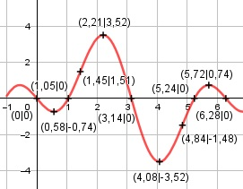

Aufgabe 178 f(x) = 2 * sin x * (1 - 2 * cos x) x im Bogenmaß Produktregel erste Ableitung: u = 2 * sin x, u' = 2 * cos x v = 1 - 2*cos x, v' = -2*(-sin x) = 2*sin x f'(x) = 2 * cos x * (1 - 2 * cos x) + + 2 * sin x * 2 * sin x f'(x) = 2 * cos x - 4 * cos2 x + 4 * sin2 x Summen- und 2mal-Kettenregel zweite Ableitung: f''(x) = -2*sin x - 4*(2 * cos x*(-sin x)) + + 4 * 2 sin x * cos x f''(x) = 16 * sin x * cos x - 2 * sin x Summen- und Produktregel dritte Ableitung: u = 16 * sin x, u' = 16 * cos x v = cos x, v' = -sin x f'''(x) = 16 * cos x * cos x + + (- sin x) * 16 sin x - 2 * cos x f'''(x) = 16 cos2 x - 16 * sin2 x - 2 * cos x Definitionsbereich: 0 ≤ x ≤ 2π Wertebereich: -3,52 ≤ f(x) ≤ 3,52 (siehe Extrempunkte) Symmetrie zur y-Achse bzw. zum Punkt (0|0): f(-x) = 2 * sin (-x) * (1 – 2 * cos (-x)) f(-x) = -2 * sin x * (1 – 2 * cos x) ≠ f(x) --> keine Achsensymmetrie -f(-x) = -(-2 * sin x * (1 – 2 * cos x)) -f(-x) = 2 * sin x * (1 – 2 * cos x) = f(x) --> Punktsymmetrie Nullstellen: f(x) = 0 2 * sin x * (1 - 2 * cos x) = 0 2 * sin x = 0 |:2 sin x = 0 x1 = 0 N1(0|0) x2 = π = 3,14 ≙ 180° N2(3,14|0) x3 = 2π = 6,28 ≙ 360° N3(6,28|0) 1 - 2 * cos x = 0 |+2 * cos x 2 * cos x = 1 |:2 cos x = 0,5 x4 = π/3 = 1,05 ≙ 60° N4(1,05|0) x4 = (5/3)π = 5,24 ≙ 300° N5(5,24|0) Schnittpunkt mit der y-Achse: X = 0 f(0) = 2 * sin 0 * (1 - 2 * cos 0) = 0 Sy(0|0) Extrempunkte: f'(x) = 0 2 * cos x - 4 * cos2 x + 4 * sin2 x = 0 Wertetabelle: x 0 1 2 3 4 f'(x) -2 2,7 1,8 -5,8 -0,7 x 5 6 2π f'(x) 3,9 -1,4 -3 Vorzeichenwechsel zwischen 0 und 1, gewählt Nullstelle x01 = 0,43 Vorzeichenwechsel zwischen 2 und 3, gewählt Nullstelle x02 = 2,24 Vorzeichenwechsel zwischen 4 und 5, gewählt Nullstelle x03 = 4,15 Vorzeichenwechsel zwischen 5 und 6, gewählt Nullstelle x04 = 5,74 Näherungsverfahren von Newton: f(x0) x1 = x0 - ------- f'(x0) x1 = 0,43 - 2*cos0,43 - 4*cos20,43 + 4*sin20,43 - ------------------------------------- 16*sin0,43 * cos0,43 - 2*sin0,43 x1 = 0,43 - (- 0,15) = 0,58 f(0,58) = 2*sin0,58 * (1 - 2*cos 0,58) = -0,74 x2 = 2,24 - 2*cos 2,24 - 4 * cos2 2,24 + 4 * sin2 2,24 - --------------------------------------------- 16 * sin 2,24 * cos 2,24 - 2 * sin 2,24 x2 = 2,24 - 0,03 = 2,21 f(2,21) = 2*sin 2,21 * (1 - 2*cos 2,21) = 3,52 x3 = 4,15 - 2 * cos4,15 - 4 * cos24,15 + 4 * sin24,15 - -------------------------------------------- 16 * sin4,15 * cos4,15 - 2 * sin4,15 x3 = 4,15 - 0,07 = 4,08 f(4,08) = 2 * sin4,08 * (1 - 2 * cos4,08) = -3,52 x4 = 5,74 - 2 * cos 5,74 - 4 * cos2 5,74 + 4 * sin2 5,74 - ---------------------------------------------- 16 * sin 5,74 * cos 5,74 - 2 * sin 5,74 x4 = 5,74 - 0,02 = 5,72 f(5,72) = 2 * sin5,72 * (1 - 2 * cos5,72) = 0,74 f''(0,58) = 16*sin0,58 * cos0,58 - 2*sin 0,58 > 0 --> Tiefpunkt(0,58|-0,74) f''(2,21) = 16*sin2,21 * cos2,21 - 2*sin 2,21 < 0 --> Hochpunkt(2,21|3,52) f''(4,08) = 16*sin4,08 * cos4,08 - 2*sin 4,08 > 0 --> Tiefpunkt(4,08|-3,52) f''(5,72) = 16*sin5,72 * cos5,72 - 2*sin 5,72 < 0 --> Hochpunkt(5,72|0,74) Wendepunkte: f''(x) = 0 16 * sin x * cos x - 2 * sin x = 0 2 * sin x * (8cos x - 1) = 0 sin x = 0 x1 = 0, f(0) = 0, f'''(0) = 16*cos20 - 16*sin20 - 2*cos0 ≠ 0 --> WP1(0|0) x2 = π = 3,14, f(3,14) = 0 f'''(3,14) = 16 * cos2 3,14 - 16 * sin2 3,14 - - 2 * cos 3,14 ≠ 0 --> WP2(3,14|0) x3 = 2π = 6,28, f(6,28) = 0 f'''(6,28) = 16 * cos2 6,28 - 16 * sin2 6,28 - - 2 * cos 6,28 ≠ 0 --> WP3(6,28|0) 8 * cos x - 1 = 0 |+1 8 * cos x = 1 | :8 cos x = 0,125 x4 = 1,45 ≙ 82,8° f(1,45) = 2*sin1,45 * (1 - 2*cos1,45) = 1,51 f'''(1,45) = 16 * cos2 1,445 - 16 * sin2 1,445 - - 2 * cos 1,445 ≠ 0 --> WP4(1,45|1,51) x4 = 4,84 ≙ 277,2° f(4,84) = 2*sin4,84 * (1 - 2*cos4,84) = -1,48 f(4,84) = 16 * cos2 4,84 - 16 * sin2 4,84 - - 2 * cos 4,84 ≠ 0 --> WP5(4,84|-1,48) Graph:
